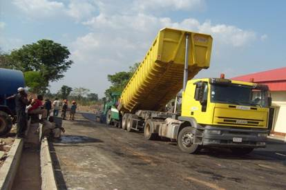

ROAD CONSTRUCTION
Roads are the indispensable networks for human mobility which directly influence the functioning of trade and human interaction. In view of the significance of roads to the Nations positive development,
J PATEL extensively and very carefully researches and participates in road construction with the view to providing effective, durable, long lasting and economic road networks. J PATEL is fully equipped technically and resourcefully to undertake rural and urban road construction.Our independent and uncompromising quality control section completely subjects all our ongoing projects to the most rigorous local and internationally accepted quality control standard tests ensuring that completed projects meet and in most cases exceed the standards set. Our team further ensures that there is a very transparent testing procedure for our clients to confirm our quality. These stringent measures are necessary in view of the high capital investment and economic benefits that road Engineering entails. Using the latest Civil Engineering methods, J PATEL delivers all road projects in excellent time.
The various fields of road construction engaged in by J PATEL are as follows:
- Surface Dressed Roads.
- Asphalt Roads.
- Concrete Paved Roads.
- Lateritic Rural Feeder Roads.
- Maintenance of Both Rural and Urban Roads.